Mare, storia e tavole cretesi tra Rethymno e Chania
–
giorni
25 – 30 Agosto 2026·May Beach Hotel, Rethymno·Aeroporto Heraklion (HER)
📲
Aggiungi alla schermata Home per usare l'app anche senza connessione internet.
L'Itinerario
Sei giorni tra Rethymno, Chania e l'entroterra cretese
Elenco dei Luoghi
Spiagge, cultura e ristoranti selezionati per il viaggio
Descrizioni indicative — verifica orari e disponibilità più vicino alla partenza.
Crediti fotografici e mappe
Creta in Sei Giorni: Guida di Viaggio in Famiglia
Itinerario completo tra Rethymno, Chania e l'entroterra cretese — spiaggia per spiaggia, tappa per tappa
L'Itinerario in Breve
Giorno 1 — Arrivo all'aeroporto di Heraklion, trasferimento a Rethymno, primo bagno in piscina.
Giorno 2 — Pranzo e spiaggia a Panormos, pomeriggio opzionale a Margarites e al Monastero di Arkadi, sera a Rethymno.
Giorno 3 — Mattina a Livadi Beach (Bali), pomeriggio al Palazzo di Cnosso, sera a Heraklion.
Giorno 4 — Spiaggia e pranzo a Marathi, sosta al Café Koukouvagia, sera con Greek Night.
Giorno 5 — Caffè a Topolia, spiaggia rosa di Elafonissi, cena a Chania.
Giorno 6 — Crociera in barca a tema pirata lungo la costa di Rethymno, piscina e old town, ultima cena a Rethymno.
Giorno 1Arrivo e Assestamento
Il primo giorno non è pensato per riempire il programma, ma per assorbire il cambio di ritmo. Dopo l'atterraggio all'Aeroporto di Heraklion e il ritiro delle auto a noleggio, il tragitto verso Rethymno segue la costa nord per circa un'ora — un buon modo per iniziare a guardarsi intorno senza fretta. Arrivati, il check-in e il primo bagno in piscina bastano a segnare l'inizio della vacanza.
Vale la pena dedicare mezz'ora, il primo pomeriggio, a un supermercato o un negozio da spiaggia: comprare uno o due ombrelloni economici qui evita di doverli cercare (o rinunciarci) il giorno dopo a Elafonissi, dove — come vedremo — la gestione dell'ombra è un fai-da-te comunale. La sera, meglio tenere le cose semplici: una cena informale vicino all'hotel è sufficiente, il vero programma comincia domani.
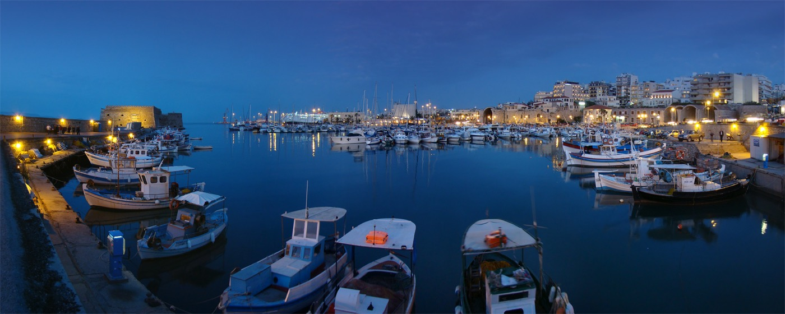
Il litorale nei pressi di Heraklion, primo sguardo su Creta appena atterrati. — Foto: Tango7174, CC BY-SA 4.0, via Wikimedia Commons
Giorno 2Panormos, Margarites e il Monastero di Arkadi
Il secondo giorno resta volutamente leggero. Con parte della comitiva arrivata a tarda notte il giorno prima, non è il momento per affrontare la giornata più lunga dell'itinerario: meglio una destinazione vicina e senza sorprese. Panormos, piccolo villaggio costiero a metà strada tra Rethymno e Bali (circa 20 minuti di auto), è la scelta giusta — una spiaggia sabbiosa tranquilla, con diverse taverne sul lungomare per il pranzo, meno affollata delle mete più note della zona.
Pranzo in taverna sul mare, poi un bagno senza fretta: la mattinata è pensata per recuperare energie più che per riempire il programma.
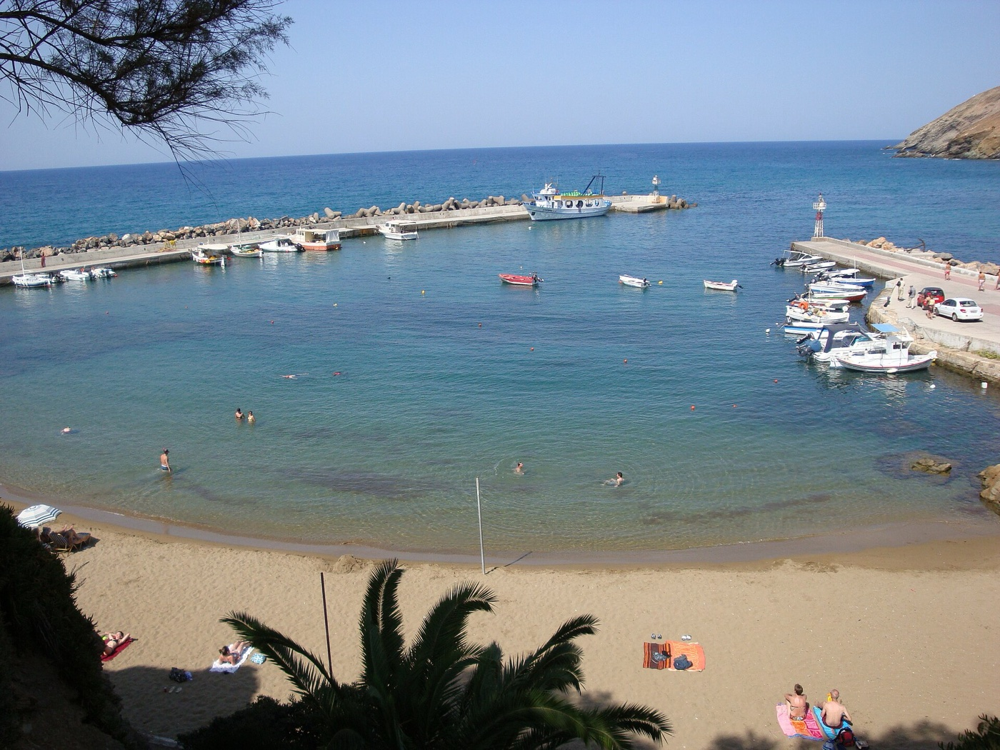
Il piccolo porto di Panormos, tappa per il pranzo a metà strada tra Rethymno e Bali. — Foto: mcfr, CC BY 3.0, via Wikimedia Commons
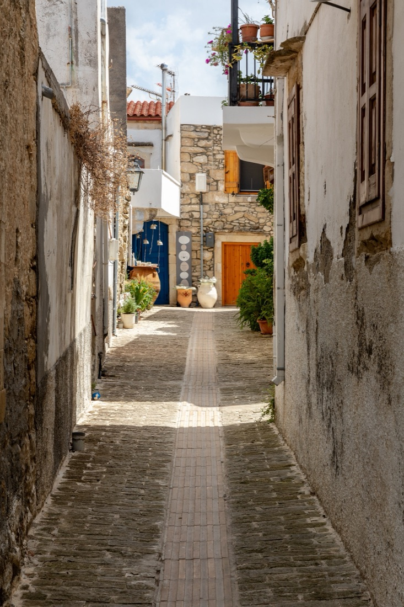
Le stradine di Margarites, tappa pomeridiana opzionale nell'entroterra di Rethymno. — Foto: Dietmar Rabich, CC BY-SA 4.0, via Wikimedia Commons
Per chi vuole allungare il pomeriggio, l'entroterra offre un piccolo circuito facile da aggiungere, circa 35 minuti di guida in tutto: Margarites, il borgo collinare con una tradizione ceramista secolare, dove le stradine sono piene di botteghe artigiane e si può ancora vedere il tornio in azione; e, a una ventina di minuti da lì, il Monastero di Arkadi. Con la sua facciata veneziana barocca, il monastero è uno dei luoghi simbolo della storia cretese: nel 1866, durante l'assedio ottomano, gli assediati si fecero esplodere insieme agli assalitori piuttosto che arrendersi — un episodio che ancora oggi definisce l'identità dell'isola.
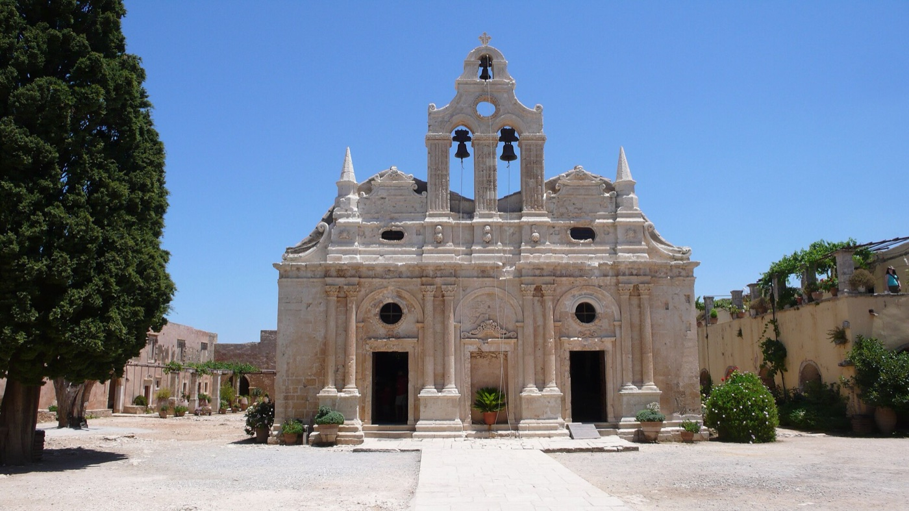
La facciata veneziana barocca del Monastero di Arkadi, simbolo della resistenza cretese. — Foto: Prekario, CC BY-SA 3.0, via Wikimedia Commons
La sera si rientra a Rethymno per cena da Taverna Knossos (un nome che, nonostante l'omonimia, non ha nulla a che vedere con il sito archeologico), prenotata per le 19:00.
Giorno 3Bali (Livadi Beach), Cnosso e Serata a Heraklion
Bali è un piccolo villaggio sulla costa nord, costruito attorno a una serie di calette strette e riparate — Livadi, Karavostasi, Evita — separate tra loro da promontori rocciosi ma tutte a pochi passi l'una dall'altra. La tappa di oggi è Livadi, la caletta più centrale e attrezzata del gruppo. L'acqua è calma quasi come quella di un lago, protetta dal vento e dalle onde del mare aperto, il che la rende una delle mete più amate dalle famiglie con bambini piccoli. È anche piccola: conviene arrivare in mattinata, verso le 9:00, per trovare posto senza dover girare a lungo tra le calette. Il pranzo si fa direttamente in una delle taverne sul mare, spesso costruite proprio sugli scogli.
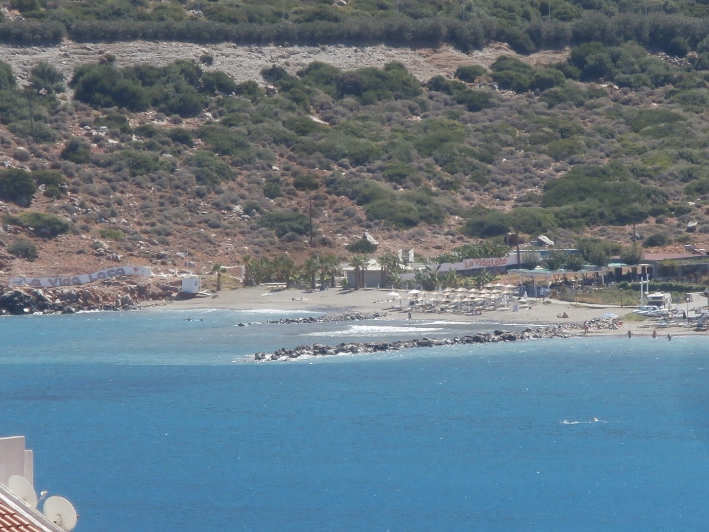
Una delle calette di Bali: acqua calma, protetta dal vento e dal mare aperto. — Foto: Pjotr Mahhonin, CC BY-SA 4.0, via Wikimedia Commons
Dal primo pomeriggio ci si sposta verso Cnosso, circa 50 minuti di auto. Il Palazzo di Cnosso è il sito archeologico più importante della civiltà minoica, la più antica cultura avanzata d'Europa, fiorita a Creta oltre 3.500 anni fa. È il luogo che il mito colloca al centro della storia del Labirinto e del Minotauro: gli scavi, guidati agli inizi del Novecento dall'archeologo britannico Arthur Evans, hanno riportato alla luce un complesso di centinaia di stanze su più livelli, magazzini, cortili e affreschi — in parte ricostruiti, ed è una delle ragioni per cui il sito divide ancora oggi gli esperti tra chi apprezza la leggibilità delle ricostruzioni e chi le considera troppo invasive.
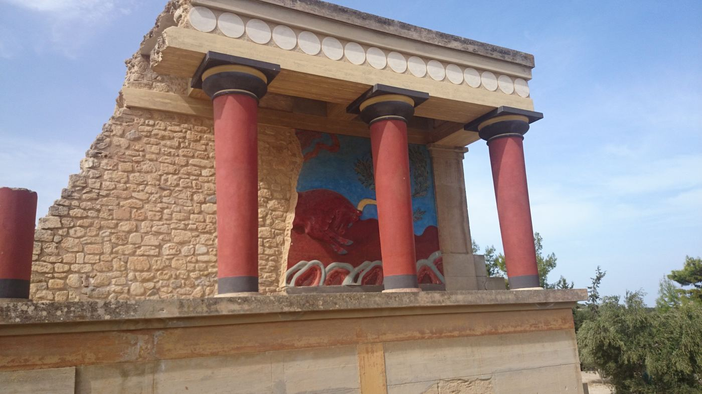
Le colonne rosse ricostruite sono uno dei tratti più riconoscibili di Cnosso. — Foto: CMOSPOWER, CC BY-SA 4.0, via Wikimedia Commons
Un ingresso nel tardo pomeriggio (qui alle 17:00, prenotato in anticipo) non è casuale: evita il caldo peggiore della giornata e regala una luce più morbida sulle pietre e sugli affreschi, mentre il sito resta comunque aperto fino a sera, quindi non serve affrettare la visita. Vale la pena prevedere un'ora, un'ora e mezza con bambini al seguito, e raccontare il mito del Minotauro prima di entrare: rende molto più coinvolgente il percorso tra le rovine, in particolare la sala del trono, una delle stanze meglio conservate del complesso.
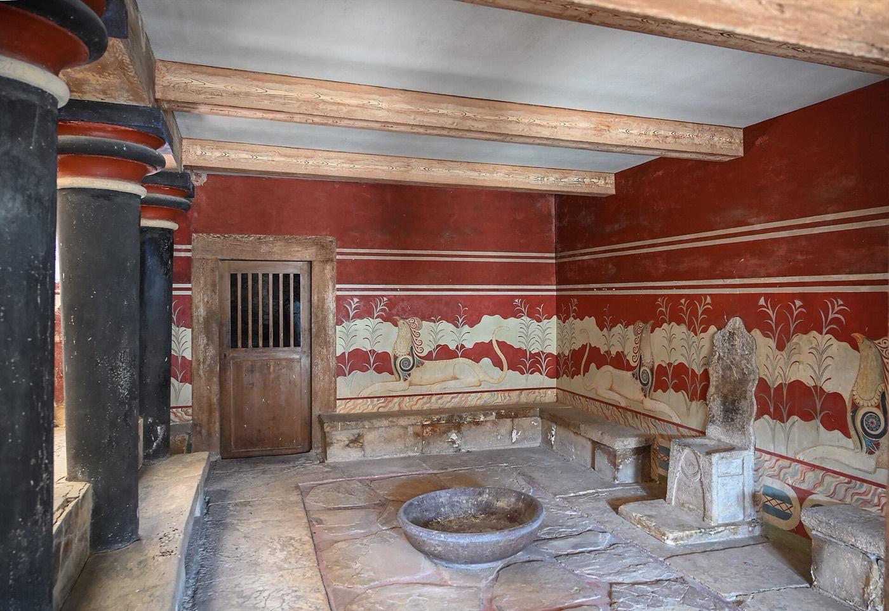
La sala del trono, una delle stanze meglio conservate del complesso minoico. — Foto: Cayambe, CC BY-SA 4.0, via Wikimedia Commons
Da Cnosso, Heraklion è a pochi minuti d'auto: conviene parcheggiare al Central Parking, custodito e nel cuore del centro storico, per muoversi poi solo a piedi. La cena da Kafeneio O Tempelis, storico mezedopoleio nella via pedonale di Milatou vicino al Museo Archeologico, è un classico locale: piccoli piatti tradizionali, raki e spesso un dolce offerto a fine pasto — è molto amato anche dagli abitanti della città. La prenotazione è confermata per le 20:30. Dopo cena, una passeggiata dalla cinquecentesca Fontana di Morosini in Piazza dei Leoni fino al Porto Veneziano chiude la giornata prima del rientro a Rethymno, circa un'ora di strada.
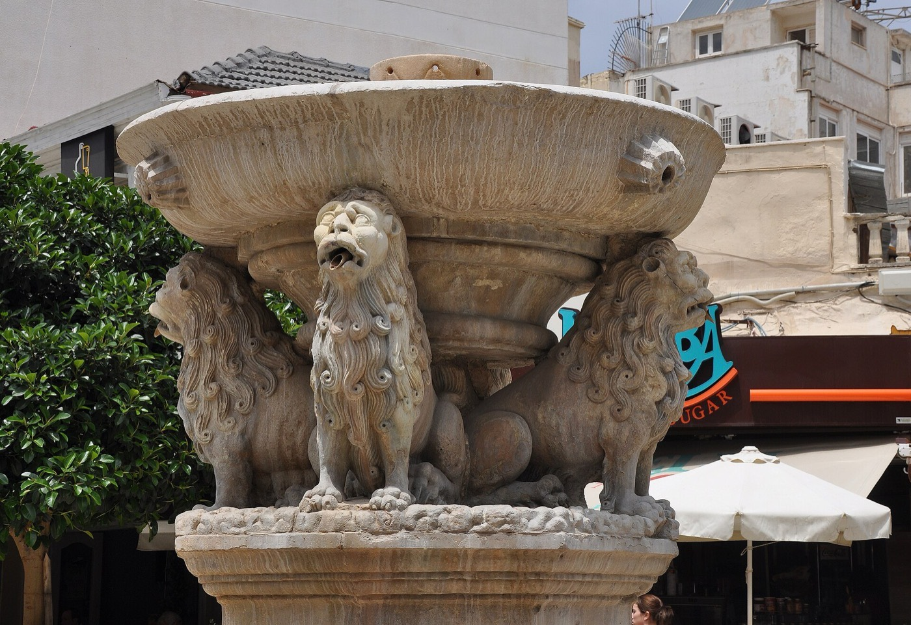
La Fontana di Morosini, cuore di Piazza dei Leoni nel centro storico di Heraklion. — Foto: Moonik, CC BY-SA 3.0, via Wikimedia Commons
Giorno 4Marathi, Café Koukouvagia e Greek Night
Il quarto giorno è quello che richiede più strada di tutto l'itinerario: circa un'ora e quaranta di guida per raggiungere Marathi, sulla penisola di Akrotiri, oltre Chania. È un tragitto lungo — più di quanto suggerisca una prima stima di pancia — ma Marathi resta, tra le spiagge vicine a Chania, quella con il miglior equilibrio tra sicurezza per i più piccoli e interesse per un adolescente: una baia a ferro di cavallo con acqua bassissima quasi ovunque, probabilmente la più sicura di tutto l'itinerario, con la possibilità di noleggiare SUP e kayak sul posto.
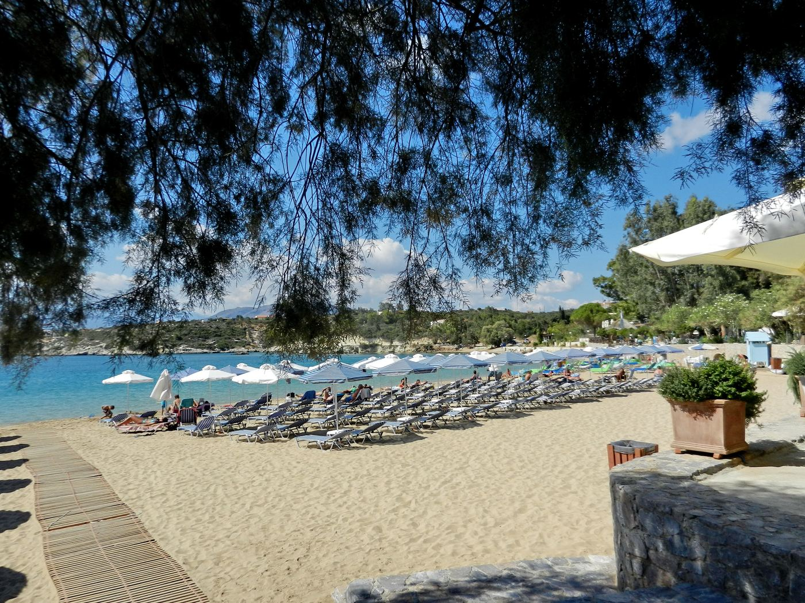
Marathi: una baia a ferro di cavallo con acqua bassissima quasi ovunque. — Foto: Tanya Dedyukhina, CC BY 3.0, via Wikimedia Commons
Lungo la strada, praticamente senza deviazione, conviene fermarsi al Café Koukouvagia, a Chalepa — il quartiere est di Chania — per una sosta caffè di una ventina di minuti sulla sua terrazza panoramica affacciata sul mare. Pranzo e bagno si fanno poi direttamente a Marathi, in una delle taverne del lungomare.
Se la giornata di guida sembra troppo, resta un'alternativa più vicina: Almyrida, in zona Apokoronas, a circa un'ora dall'hotel — quasi la metà del tempo rispetto a Marathi. Ha un'atmosfera diversa, più villaggio turistico che baia isolata, con un lungomare vivace di taverne e caffè e una spiaggia comunque sabbiosa e calma. La decisione tra le due si può prendere anche la mattina stessa, in base a quanta voglia c'è di stare in auto.
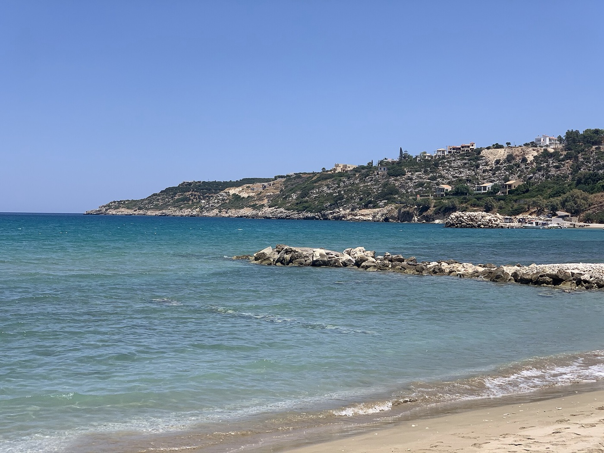
Almyrida, l'alternativa più vicina se il tragitto verso Marathi sembra troppo lungo. — Foto: Benoît Prieur, CC0, via Wikimedia Commons
Il rientro al May Beach Hotel richiede altrettanta strada, quindi conviene ripartire con un margine di anticipo per non arrivare tardi alla Greek Night: cena alle 20:00 alla Taverna Thalassi, seguita alle 20:30 da uno spettacolo con musica dal vivo e danze tradizionali cretesi.
Giorno 5Caffè a Topolia, Spiaggia Rosa di Elafonissi e Sera a Chania
Elafonissi è una riserva naturale nell'angolo sud-occidentale di Creta, famosa in tutto il Mediterraneo per la sabbia dalle sfumature rosate — dovute a minuscoli frammenti di conchiglie — e per la laguna bassa e trasparente che la separa da un isolotto raggiungibile a piedi. È una delle spiagge più fotografate della Grecia, il che significa anche una delle più affollate: dalla tarda mattinata in poi il parcheggio si riempie e la sabbia libera si restringe sensibilmente. Partire alle 8:30, con circa due ore di strada da mettere in conto, aiuta comunque a trovarla ancora relativamente tranquilla prima del pieno affollamento di metà giornata.
Il percorso verso sud-ovest attraversa l'entroterra montuoso di Chania, e vale la pena spezzarlo con una sosta breve — quindici, venti minuti al massimo. Due opzioni comode: la piazzetta ombreggiata di Elos, un paese di montagna noto per i suoi castagni secolari, oppure il bar panoramico affacciato sulla Gola di Topolia, comodo perché tutto in terrazza, senza bisogno di percorsi a piedi.
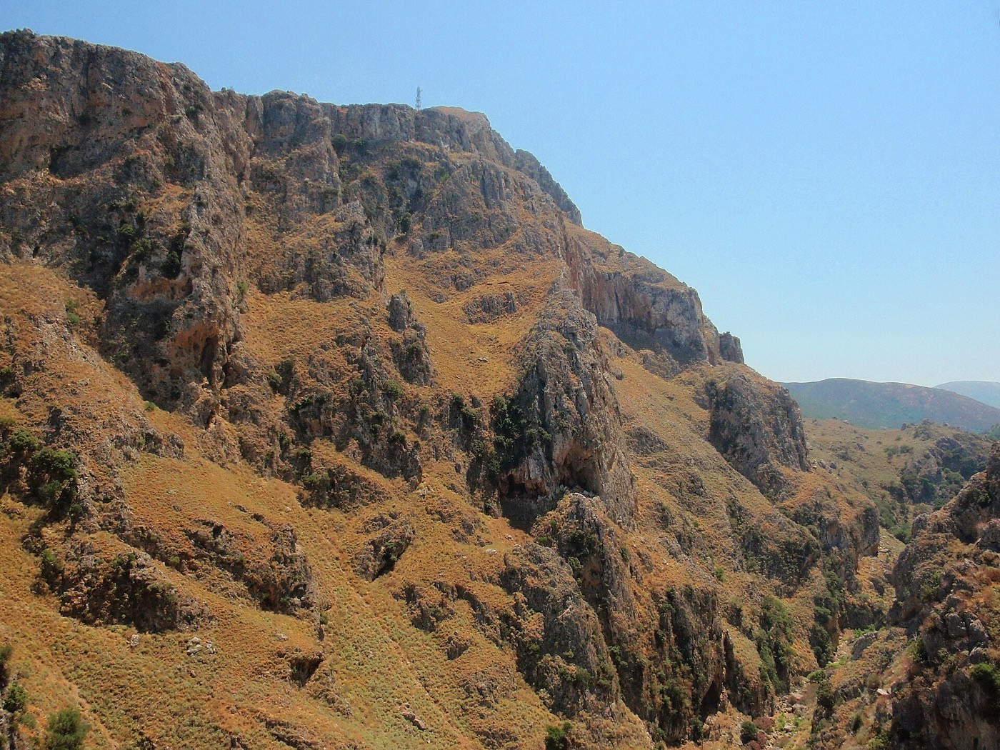
La Gola di Topolia, una delle soste panoramiche lungo la strada per Elafonissi. — Foto: Jimzoun, CC BY-SA 4.0, via Wikimedia Commons
Una volta arrivati, l'ombrellone portato da casa permette di sistemarsi senza dipendere dai lettini a noleggio, che qui sono gestiti dal comune e assegnati semplicemente in ordine di arrivo. L'acqua della laguna resta bassissima per decine di metri — tra le più sicure dell'isola per i bambini piccoli — mentre il lato aperto verso il mare regala il colore turchese che rende Elafonissi così riconoscibile nelle foto. Il pranzo si fa in una delle taverne dietro la spiaggia, prima di un ultimo bagno nel primo pomeriggio.
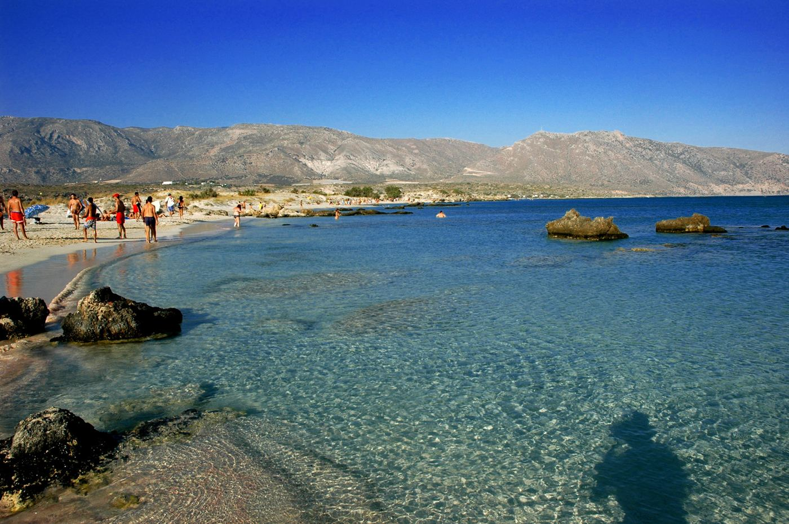
La laguna di Elafonissi: acqua bassissima e sabbia dalle sfumature rosate. — Foto: G Da, CC BY-SA 3.0, via Wikimedia Commons
Nel tardo pomeriggio si riparte, ma non verso Rethymno: la strada del rientro passa comunque vicino a Chania, quindi proseguire fino in città costa solo una decina di minuti in più rispetto al percorso diretto. È un'occasione da non sprecare. Il parcheggio è al Molo Est, in Via Defkalionos 8, nel quartiere di Splantzia: da lì, pochi minuti a piedi fino al Ristorante Oinopoieio, in Via Chatzimichali Ntaliani, attraversando Via Sifaka — il vicolo dei coltellai, uno degli scorci più caratteristici del quartiere.
Dopo cena, la passeggiata prosegue verso il Porto Veneziano (zona Akti Tompazi / Kountourioti), tagliando ancora tra i vicoli di Splantzia fino ad affacciarsi sul mare — moli di pietra e un faro in stile egiziano del XVI secolo alla fine del molo, probabilmente lo scorcio più suggestivo di Creta, ancora più bello di sera quando le luci si accendono sull'acqua. Il rientro al parcheggio si fa con calma, passando dagli Arsenali Veneziani — i Neoria — e camminando sul bagnasciuga di Akti Enoseos, prima dell'unica strada di rientro verso Rethymno, circa un'ora e un quarto.
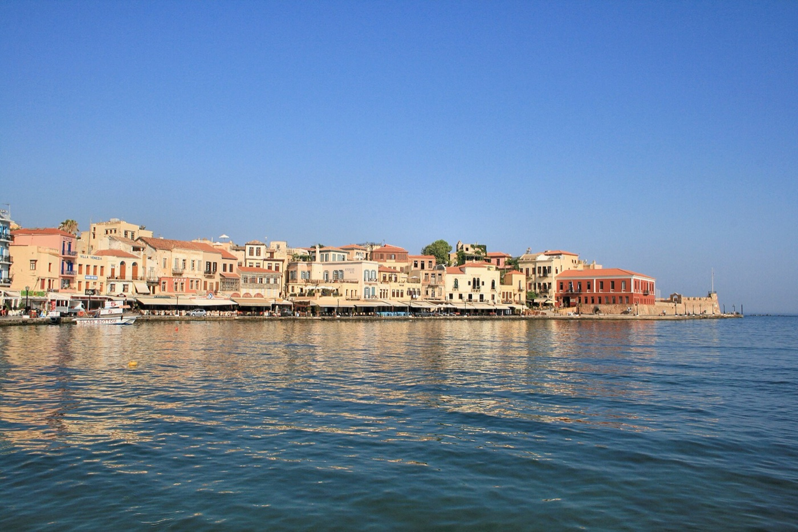
Le facciate veneziane del porto di Chania, tra le più fotografate di Creta. — Foto: Lapplaender, CC BY-SA 3.0 DE, via Wikimedia Commons
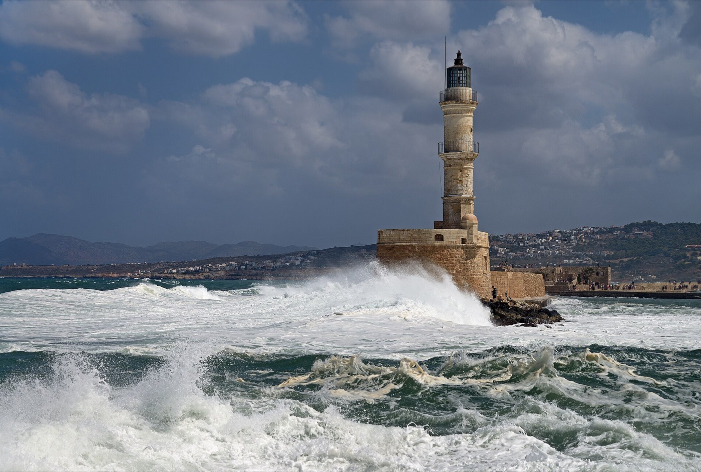
Il faro all'ingresso del Porto Veneziano di Chania, tappa della passeggiata serale dopo cena. — Foto: Ввласенко, CC BY-SA 3.0, via Wikimedia Commons
Giorno 6Crociera dei Pirati e Ultima Sera a Rethymno
L'ultimo giorno pieno si stacca dal resto dell'itinerario con una mattinata diversa dalle altre: una crociera di tre ore a bordo della Captain Hook, un veliero a tema pirata che parte dal Marina Port di Rethymno (conviene presentarsi al molo 45 minuti prima). Il percorso segue la costa orientale della città, tocca le leggendarie Grotte dei Pirati e l'arco roccioso di Camarola, e prevede una sosta di mezz'ora per un bagno in acque cristalline al largo. A bordo sono inclusi una bevanda — birra o vino per gli adulti, una bibita per i bambini — e uno snack; i bambini dai 5 ai 12 anni hanno lo sconto del 50%, mentre gli under 4 viaggiano gratis (va dichiarato in fase di prenotazione). Al rientro, la vista sulla Fortezza e sul Porto Veneziano dal mare è un ottimo modo per scoprire Rethymno da un'angolazione diversa da quella con cui la si visiterà poco dopo, a piedi.
Nel pomeriggio, dopo il rientro, c'è tempo per la piscina dell'hotel — ed è anche il momento più comodo per dedicare un'ora alla old town, magari proprio agli stessi luoghi appena visti dal mare. Il centro storico mescola architettura veneziana e ottomana in uno spazio compatto e percorribile a piedi: la Fortezza, costruita dai veneziani nel XVI secolo per difendere il porto dai raid dei pirati e poi ampliata dagli ottomani, domina la città da un promontorio roccioso e regala una vista che vale la salita. Ai suoi piedi, i vicoli del centro sono pieni di balconi in legno, portali scolpiti e un porto veneziano più piccolo e raccolto rispetto a quello di Chania, ma non meno pittoresco, soprattutto quando si accendono le luci della sera.
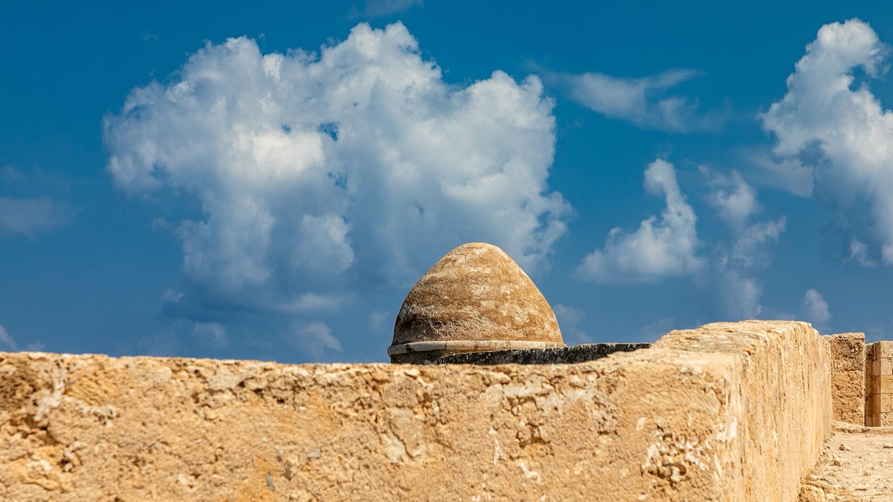
La Fortezza veneziana, costruita nel XVI secolo a difesa del porto di Rethymno. — Foto: Renatas, CC BY-SA 3.0, via Wikimedia Commons
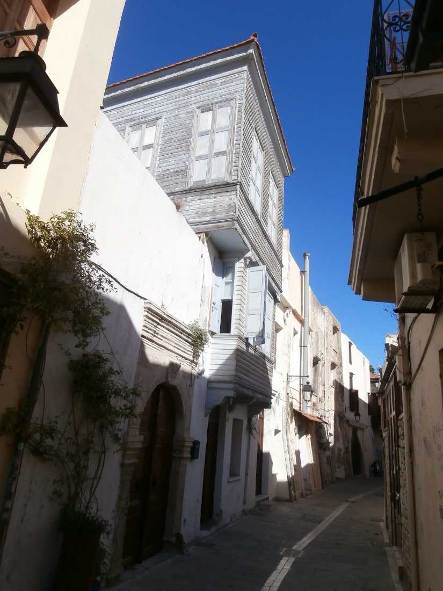
Un balcone in legno sporgente, tipico dei vicoli della old town. — Foto: C messier, CC BY-SA 3.0, via Wikimedia Commons
La cena, per l'ultima sera in Grecia, è da Asikiko, rinomato mezedopoleio nei vicoli della old town di Rethymno, a cinque minuti dall'hotel: porzioni abbondanti di piccoli piatti da condividere, in un'atmosfera raccolta che si presta bene a un ultimo brindisi prima del rientro.
Se Hai Più TempoAnogeia e l'Entroterra Montano
Questo itinerario di sei giorni non tocca l'entroterra montano di Creta, ma vale la pena saperne l'esistenza per un'eventuale estensione del viaggio. Anogeia, sulle pendici del Monte Psiloritis, è un villaggio di montagna a un'altitudine che regala un clima decisamente più fresco rispetto alla costa — un sollievo, se il caldo di fine agosto si fa sentire. È noto per la musica tradizionale suonata con la lyra cretese, per la tessitura, e per il suo ruolo simbolico nella resistenza cretese durante la Seconda Guerra Mondiale, quando il villaggio fu raso al suolo dalle truppe tedesche in rappresaglia.
È anche, insieme alla vicina Axos, il posto giusto per assaggiare l'Antikristo: agnello intero disposto in cerchio attorno a un fuoco aperto e cotto lentamente per ore, una delle esperienze gastronomiche più autentiche e scenografiche dell'isola. La strada di montagna per arrivarci richiede una guida più attenta rispetto ai tragitti costieri di questo itinerario, ma i paesaggi — gole, altopiani, greggi di capre libere sulla strada — ripagano l'impegno.
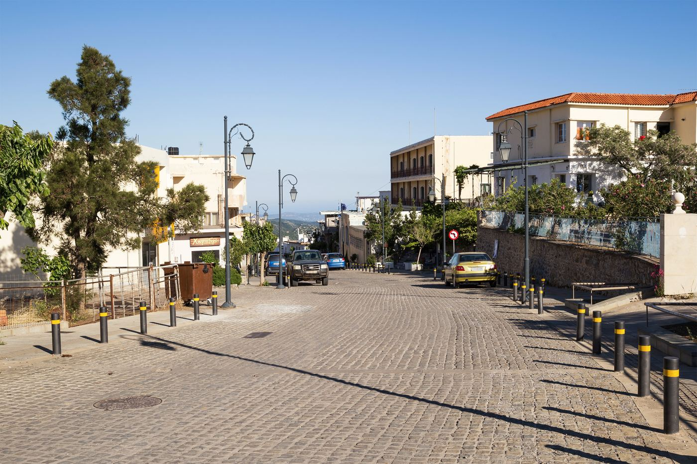
Anogeia, villaggio di montagna sulle pendici del Psiloritis. — Foto: Unukorno, CC BY 4.0, via Wikimedia Commons
Consigli Pratici
Spiagge e Sole
Porta il tuo ombrellone: molte delle spiagge migliori di Creta, Elafonissi in testa, non hanno un servizio organizzato di lettini a noleggio — l'ombra si gestisce da soli, comune per comune, in ordine di arrivo.
Le spiagge più famose (Elafonissi, ma anche Bali nel weekend) vanno affrontate presto al mattino: dalla tarda mattinata in poi affollamento e traffico crescono rapidamente.
Per i bambini più piccoli, cerca acque basse e protette: la laguna di Elafonissi, Marathi e Bali sono le opzioni più sicure di questo itinerario.
Porta sempre scarpette da scoglio: utili non solo in spiaggia, ma anche per le brevi soste in gole come quella di Topolia.
Guida e Logistica
Un'unica base fissa (qui Rethymno) e giornate organizzate come gite ad anello riducono drasticamente il tempo passato in auto rispetto a un itinerario che cambia hotel ogni notte o due.
I trasferimenti più lunghi di questo itinerario (verso Marathi, verso Elafonissi, verso Cnosso) meritano una sosta intermedia: pianificala in anticipo, così da sapere dove fermarti senza perdere tempo a cercare sul momento.
Quando una città (Chania, Heraklion) è comunque sulla strada del rientro, vale quasi sempre la pena fermarsi: il costo in tempo aggiuntivo è spesso minimo rispetto al beneficio.
Nei centri storici, cerca parcheggi custoditi vicino al perimetro pedonale (come il Central Parking di Heraklion) invece di girare a lungo per strada.
Cibo e Ristoranti
Prenota in anticipo le cene nei giorni con un programma serale fisso (come la Greek Night): i posti migliori si riempiono rapidamente in alta stagione.
I mezedopoleia — locali specializzati in piccoli piatti da condividere — sono spesso l'opzione più interessante per famiglie: permettono di assaggiare più piatti diversi senza il rischio di un piatto "sbagliato" per i palati più difficili.
Porta sempre un po' di contante: molte taverne di paese, fuori dai centri più turistici, non accettano ancora pagamenti con carta.
In Viaggio con Adolescenti
Alterna giornate di sola spiaggia con tappe più attive: noleggio SUP/kayak a Marathi, shopping pomeridiano a Chania e le botteghe di ceramica di Margarites sono buoni modi per spezzare la routine "solo mare".
Cnosso funziona meglio se raccontato: il mito del Minotauro rende la visita più di una semplice camminata tra rovine, anche per un adolescente.
Sei giorni non bastano per vedere tutta Creta — ma seguendo un itinerario come questo, con una base fissa e giornate pensate per stare comodamente in sé stesse, bastano per viverne davvero una parte: una spiaggia rosa, un palazzo minoico vecchio di millenni, e più di una cena nei vicoli veneziani illuminati dalla sera.
Crete in Six Days: A Family Travel Guide
A complete itinerary between Rethymno, Chania and the Cretan interior — beach by beach, stop by stop
The Itinerary at a Glance
Day 1 — Arrival at Heraklion Airport, transfer to Rethymno, first swim in the pool.
Day 2 — Lunch and beach at Panormos, optional afternoon at Margarites and Arkadi Monastery, evening in Rethymno.
Day 3 — Morning at Livadi Beach (Bali), afternoon at the Palace of Knossos, evening in Heraklion.
Day 4 — Beach and lunch at Marathi, a stop at Café Koukouvagia, evening Greek Night.
Day 5 — Coffee at Topolia, Elafonissi pink sand beach, dinner in Chania.
Day 6 — A pirate-themed boat cruise along the Rethymno coast, pool time and the old town, last dinner in Rethymno.
Day 1Arrival and Settling In
The first day isn't built to be full — it's built to absorb the change of pace. After landing at Heraklion Airport and picking up the rental cars, the drive to Rethymno follows the north coast for about an hour, a good way to start taking in the scenery without any rush. Once there, check-in and a first swim in the pool are enough to mark the real start of the holiday.
It's worth spending half an hour that first afternoon at a supermarket or beach shop: buying one or two cheap umbrellas here saves you from having to search for one (or going without) the next day at Elafonissi, where, as we'll see, shade is entirely a do-it-yourself, municipally run affair. For dinner, keep it simple — a low-key meal near the hotel is enough; the real itinerary starts tomorrow.
The coastline near Heraklion — your first glimpse of Crete after landing. — Photo: Tango7174, CC BY-SA 4.0, via Wikimedia Commons
Day 2Panormos, Margarites and Arkadi Monastery
The second day is deliberately kept light. With part of the group arriving late the night before, this isn't the moment to tackle the longest day in the itinerary — better a nearby destination with no surprises. Panormos, a small coastal village halfway between Rethymno and Bali (about 20 minutes' drive), is the right call: a quiet sandy beach with several seafront tavernas for lunch, less crowded than the area's better-known spots.
Lunch at a taverna by the sea, then an unhurried swim: the morning is built to recover energy rather than to fill the schedule.
Panormos's small harbour, a lunch stop halfway between Rethymno and Bali. — Photo: mcfr, CC BY 3.0, via Wikimedia CommonsThe lanes of Margarites, an optional afternoon stop in Rethymno's interior. — Photo: Dietmar Rabich, CC BY-SA 4.0, via Wikimedia Commons
For anyone wanting to stretch the afternoon, the interior offers an easy loop to add on, about 35 minutes of driving in total: Margarites, the hillside village with a centuries-old pottery tradition, where the lanes are lined with artisan workshops and you can still watch the wheel in action; and, about twenty minutes further on, Arkadi Monastery. With its Venetian baroque façade, the monastery is one of the symbolic places in Cretan history: in 1866, during the Ottoman siege, those trapped inside blew themselves up along with the attackers rather than surrender — an episode that still shapes the island's identity today.
Arkadi Monastery's Venetian baroque façade, a symbol of Cretan resistance. — Photo: Prekario, CC BY-SA 3.0, via Wikimedia Commons
The evening brings a return to Rethymno for dinner at Taverna Knossos (a name that, despite the coincidence, has nothing to do with the archaeological site), booked for 19:00.
Day 3Bali (Livadi Beach), Knossos, and an Evening in Heraklion
Bali is a small village on the north coast, built around a string of narrow, sheltered coves — Livadi, Karavostasi, Evita — separated by rocky headlands but only steps apart from one another. Today's stop is Livadi, the most central and well-equipped of the coves. The water is nearly lake-calm, protected from wind and open-sea swell, which makes it one of the beaches families with young children love most. It's also small, so it's worth arriving in the morning, around 9am, to find a spot without spending too long moving between coves. Lunch happens right there, at one of the seaside tavernas, often built directly over the rocks.
One of Bali's coves: calm water, sheltered from wind and open sea. — Photo: Pjotr Mahhonin, CC BY-SA 4.0, via Wikimedia Commons
From early afternoon, it's about a 50-minute drive to Knossos. The Palace of Knossos is the most important archaeological site of Minoan civilization, Europe's oldest advanced culture, which flourished on Crete more than 3,500 years ago. It's the site myth places at the center of the story of the Labyrinth and the Minotaur: excavations, led in the early 20th century by British archaeologist Arthur Evans, uncovered a sprawling, multi-level complex of hundreds of rooms, storerooms, courtyards, and frescoes — partly reconstructed, which is one reason the site still divides experts between those who appreciate how the reconstructions aid understanding and those who find them too invasive.
The reconstructed red columns are one of Knossos's most recognizable features. — Photo: CMOSPOWER, CC BY-SA 4.0, via Wikimedia Commons
A late-afternoon entry (here, 17:00, booked ahead of time) isn't arbitrary: it avoids the worst of the day's heat and gives softer light on the stone and the frescoes, while the site itself stays open into the evening, so there's no need to rush the visit. Plan for an hour to ninety minutes with kids in tow, and tell the story of the Minotaur before going in — it makes the walk through the ruins far more engaging, especially through the throne room, one of the best-preserved spaces in the whole complex.
The throne room, one of the best-preserved spaces in the Minoan complex. — Photo: Cayambe, CC BY-SA 4.0, via Wikimedia Commons
From Knossos, Heraklion is only a few minutes' drive away. It's worth parking at Central Parking, a guarded lot right in the historic center, and continuing on foot from there. Dinner at Kafeneio O Tempelis, a historic mezedopoleio on the pedestrian street of Milatou near the Archaeological Museum, is a local classic: small traditional dishes, raki, and often a dessert on the house at the end of the meal — it's much loved by locals too. The reservation is confirmed for 20:30. After dinner, a walk from the 16th-century Morosini Fountain in Lions Square down to the Venetian Harbour rounds off the day, before the drive back to Rethymno, about an hour.
The Morosini Fountain, the heart of Heraklion's Lions Square. — Photo: Moonik, CC BY-SA 3.0, via Wikimedia Commons
Day 4Marathi, Café Koukouvagia, and Greek Night
Day four asks for more driving than any other day in the itinerary: about an hour and forty minutes to reach Marathi, on the Akrotiri peninsula, past Chania. It's a long haul — longer than a first gut estimate would suggest — but among the beaches near Chania, Marathi still offers the best balance between safety for younger kids and interest for a teenager: a horseshoe-shaped bay with shallow water almost everywhere, probably the safest in the whole itinerary, with SUP and kayak rental available on site.
Marathi: a horseshoe-shaped bay with shallow water almost everywhere. — Photo: Tanya Dedyukhina, CC BY 3.0, via Wikimedia Commons
Along the way, with essentially no detour, it's worth stopping at Café Koukouvagia, in Chalepa — Chania's eastern district — for a twenty-minute coffee break on its panoramic terrace overlooking the sea. Lunch and a swim then happen right at Marathi, at one of the seafront tavernas.
If the driving feels like too much, there's a closer alternative: Almyrida, in the Apokoronas area, about an hour from the hotel — nearly half the drive time of Marathi. It has a different feel, more lively seaside village than isolated bay, with a bustling promenade of tavernas and cafés and a beach that's still sandy and calm. The choice between the two can be made on the morning itself, depending on how much driving the group has the appetite for.
Almyrida, the closer alternative if the drive to Marathi feels like too much. — Photo: Benoît Prieur, CC0, via Wikimedia Commons
Getting back to the May Beach Hotel takes just as much driving, so it's worth leaving with a buffer to avoid arriving late for Greek Night: dinner at 20:00 at Taverna Thalassi, followed at 20:30 by a show with live music and traditional Cretan dancing.
Day 5Coffee at Topolia, Elafonissi Pink Sand Beach, and an Evening in Chania
Elafonissi is a nature reserve in Crete's southwestern corner, famous across the Mediterranean for its pink-tinged sand — the color comes from tiny fragments of shell — and for the shallow, transparent lagoon that separates it from a small islet you can walk to. It's one of the most photographed beaches in Greece, which also makes it one of the most crowded: from late morning onward, the parking fills up and the open sand visibly shrinks. Leaving at 8:30, with roughly two hours of driving ahead, still helps find it relatively calm before the midday crowds peak.
The drive southwest cuts through Chania's mountainous interior, and it's worth breaking it up with a short stop — fifteen to twenty minutes at most. Two easy options: the shaded little square of Elos, a mountain village known for its centuries-old chestnut trees, or the panoramic bar overlooking Topolia Gorge, convenient because it's all terrace seating, no hiking required.
Topolia Gorge, one of the scenic stops on the road to Elafonissi. — Photo: Jimzoun, CC BY-SA 4.0, via Wikimedia Commons
Once there, the umbrella brought from the day before means you're not dependent on rental sunbeds, which here are managed by the municipality and simply assigned in order of arrival. The lagoon's water stays shin-deep for dozens of meters — among the safest stretches of water on the island for small children — while the open side facing the sea delivers the turquoise color that makes Elafonissi so recognizable in photos. Lunch happens at one of the tavernas set back from the beach, before one last swim in the early afternoon.
Elafonissi's lagoon: shallow water and pink-tinged sand. — Photo: G Da, CC BY-SA 3.0, via Wikimedia Commons
In the late afternoon it's time to move on — but not toward Rethymno. The route back happens to pass close to Chania anyway, so continuing into the city costs only about ten extra minutes compared with the direct route. It's an opportunity worth taking. Parking is at the Molo Est, on Defkalionos 8, in the Splantzia district: from there, it's a short walk to Ristorante Oinopoieio, on Chatzimichali Ntaliani street, crossing Sifaka street — the knife-makers' lane, one of the most characterful corners of the neighborhood.
After dinner, the walk continues toward the Venetian Harbour (the Akti Tompazi / Kountourioti area), cutting back through Splantzia's lanes until the sea opens up — stone quays and a 16th-century Egyptian-style lighthouse at the end of the breakwater, arguably the single most striking view in Crete, even more so in the evening once the lights come up over the water. The walk back to the car takes it slow, passing the Venetian Arsenals — the Neoria — and following the water's edge along Akti Enoseos, before the one road back to Rethymno, about an hour and fifteen minutes.
The Venetian waterfront of Chania, among the most photographed in Crete. — Photo: Lapplaender, CC BY-SA 3.0 DE, via Wikimedia CommonsThe lighthouse at the entrance to Chania's Venetian Harbour, a stop on the evening walk after dinner. — Photo: Ввласенко, CC BY-SA 3.0, via Wikimedia Commons
Day 6Pirate Boat Cruise and a Last Evening in Rethymno
The last full day breaks from the rest of the itinerary with a different kind of morning: a three-hour cruise aboard the Captain Hook, a pirate-themed sailing boat departing from Rethymno's Marina Port (plan to be at the dock 45 minutes early). The route follows the town's eastern coastline, stops at the legendary Pirate Caves and the Camarola rock arch, and includes a 30-minute swim stop in open, crystal-clear water. A drink is included on board — beer or wine for adults, a soft drink for kids — along with a snack; children aged 5–12 get a 50% discount, and under-4s travel free (this needs to be declared at booking). On the way back, seeing the Fortezza and the Venetian Harbour from the water is a good way to take in Rethymno from a different angle than the one you'll get on foot shortly after.
In the afternoon, once you're back, there's time for the hotel pool — and it's also the easiest moment to set aside an hour for the old town, perhaps revisiting the very same landmarks just seen from the sea. The historic center blends Venetian and Ottoman architecture in a compact, entirely walkable area: the Fortezza, built by the Venetians in the 16th century to defend the harbor from pirate raids and later expanded by the Ottomans, looms over the town from a rocky headland and rewards the climb with a proper view. At its foot, the old town's lanes are full of wooden balconies and carved stone doorways, and a Venetian harbour that's smaller and cozier than Chania's but no less picturesque, especially once the evening lights come on.
The Venetian Fortezza, built in the 16th century to defend Rethymno's harbor. — Photo: Renatas, CC BY-SA 3.0, via Wikimedia CommonsA traditional overhanging wooden balcony, typical of the old town's lanes. — Photo: C messier, CC BY-SA 3.0, via Wikimedia Commons
Dinner, for the last evening in Greece, is at Asikiko, a well-known mezedopoleio in the lanes of Rethymno's old town, five minutes from the hotel: generous shared plates in an intimate setting that lends itself well to one last toast before heading back.
If You Have More TimeAnogeia and the Mountain Interior
This six-day itinerary doesn't venture into Crete's mountainous interior, but it's worth knowing it's there for anyone extending the trip. Anogeia, on the slopes of Mount Psiloritis, sits at an altitude that brings a noticeably cooler climate than the coast — a relief if the late-August heat starts to wear thin. It's known for traditional music played on the Cretan lyra, for weaving, and for its symbolic role in Cretan resistance during World War II, when the village was burned to the ground by German troops in reprisal.
It's also, along with nearby Axos, the right place to try Antikristo: a whole lamb arranged in a circle around an open fire and slow-cooked for hours, one of the island's most authentic and dramatic culinary experiences. The mountain roads to get there call for more careful driving than the coastal routes in the rest of this itinerary, but the scenery — gorges, plateaus, goats wandering freely across the road — makes up for the effort.
Anogeia, a mountain village on the slopes of Mount Psiloritis. — Photo: Unukorno, CC BY 4.0, via Wikimedia Commons
Practical Tips
Beaches and Sun
Bring your own umbrella: many of Crete's best beaches, Elafonissi above all, have no organized sunbed rental — shade is self-managed, municipality by municipality, first come, first served.
Tackle the most famous beaches (Elafonissi, and Bali on weekends) early in the morning: crowds and traffic build up fast from late morning onward.
For younger kids, look for shallow, sheltered water: Elafonissi's lagoon, Marathi, and Bali are the safest picks in this itinerary.
Pack water shoes: useful not just at the beach but for short gorge stops like the one at Topolia.
Driving and Logistics
One fixed base (Rethymno, here) with days planned as loop trips cuts driving time dramatically compared with an itinerary that changes hotels every night or two.
Several of the longer drives in this itinerary (to Marathi, to Elafonissi, to Knossos) deserve a planned stop along the way — decide on it in advance so you're not scrambling to find somewhere on the fly.
When a city (Chania, Heraklion) sits on the way back anyway, it's almost always worth stopping: the extra time cost is usually small compared with the payoff.
In historic centers, look for guarded parking near the pedestrian core (like Heraklion's Central Parking) instead of circling for street parking.
Food and Dining
Book ahead for evenings with a fixed program (like Greek Night): the best spots fill up quickly in peak season.
Mezedopoleia — restaurants built around small shared plates — are often the best choice for families: they let everyone try several different dishes without the risk of one "wrong" order for pickier eaters.
Carry some cash: many village tavernas, away from the busiest tourist centers, still don't take cards.
Traveling with Teenagers
Alternate beach-only days with more active stops: SUP/kayak rental at Marathi, an afternoon of shopping in Chania, and the pottery workshops of Margarites are good ways to break up a "just the beach" routine.
Knossos works best with a story attached: telling the myth of the Minotaur turns the visit into more than a walk through ruins, even for a teenager.
Six days aren't enough to see all of Crete — but following an itinerary like this one, with a fixed base and days built to fit comfortably within themselves, is enough to genuinely experience a real slice of it: a pink beach, a millennia-old Minoan palace, and more than one dinner in a Venetian lane lit up for the evening.